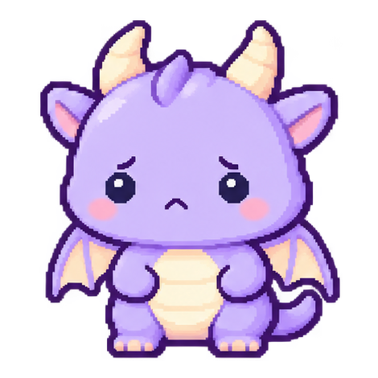
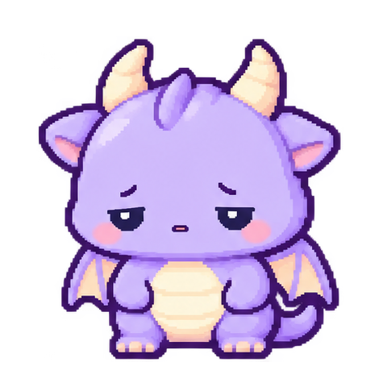
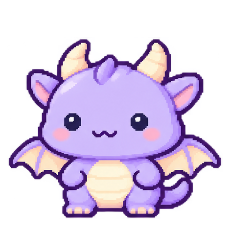

傷心

內側眉毛微揚，小嘴下垂，翅膀失落地收攏。
睜眼 2.2 秒，閉眼 0.24 秒。
下載傷心動畫成年龍 · 六格表情候選 v1
每種表情以睜眼／閉眼兩格播放。翅膀隨情緒低垂或輕展，沒有額外愛心、藥水或其他符號。
本次表情與姿態仍待美術確認；此頁為獨立預覽，正式 Web 角色與存檔未變。

內側眉毛微揚，小嘴下垂，翅膀失落地收攏。
睜眼 2.2 秒，閉眼 0.24 秒。
下載傷心動畫
眼皮低垂、雙手放鬆，翅膀更貼近身體。
半睜眼 1.4 秒，閉眼休息 0.9 秒。
下載生病動畫
保留小豆眼與小微笑，閉眼時露出舒服的笑眼。
睜眼 1.8 秒，笑眼 0.65 秒。
下載開心動畫預覽時間為 Web 暫定節奏。生成原圖的留白不等寬，已依實際輪廓切格，再以整數平移及透明留白對齊，沒有縮放或重畫角色像素。生成畫格間仍有細節差異，對齊不代表美術已驗收。